Hazard Smart Assistant
User Guide
Installer
First we have to start up the engine of the application. We can do by typing the command "./start.sh". Remember that this will start at port 8443.
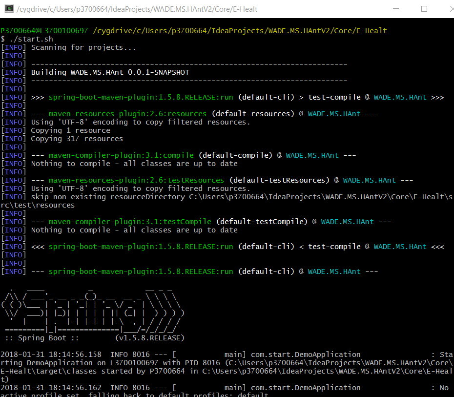After the engine is started we need to start the microServices. We can do by typing the command "./Launch.cmd"
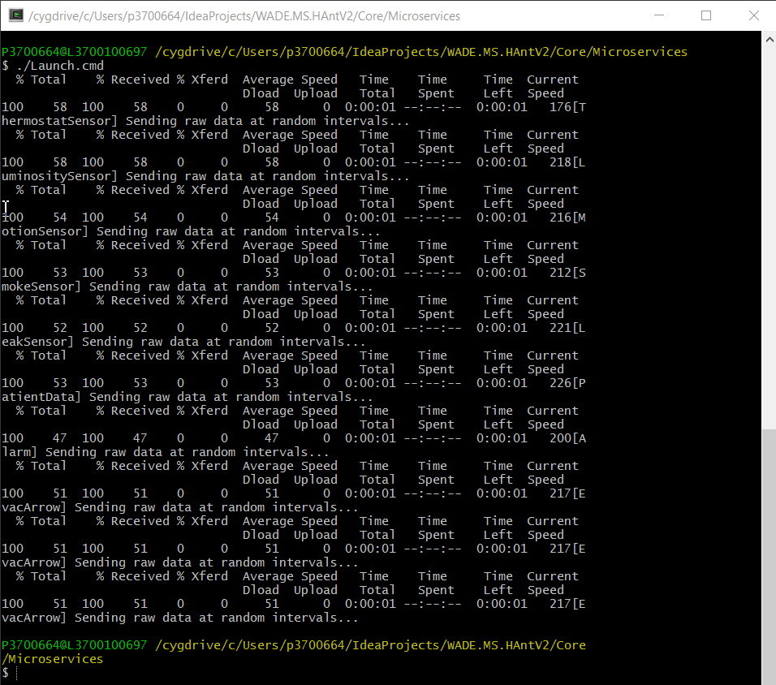Then we need to connect our micro services to the engine.
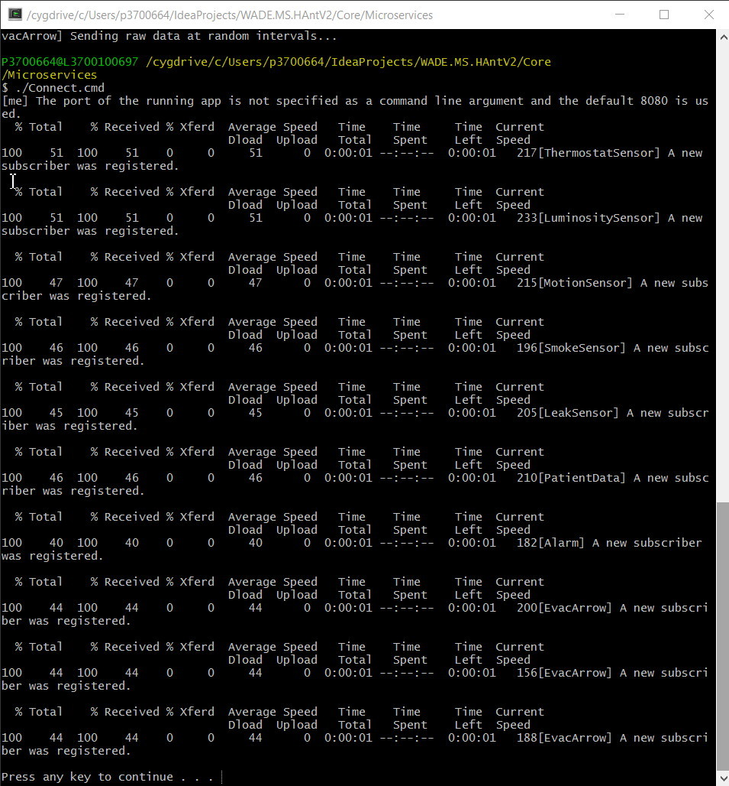After all of this is done we need to start the UI application. This can ala be done with the command "./start.sh" but be carefully to be in the right folder.
When all of this is over we ca finally access the application. Remember! This Ui app wiil start at port 8080.
When we access it we will see three tabs. One called "Sensors", one "Patient", and one "Building"
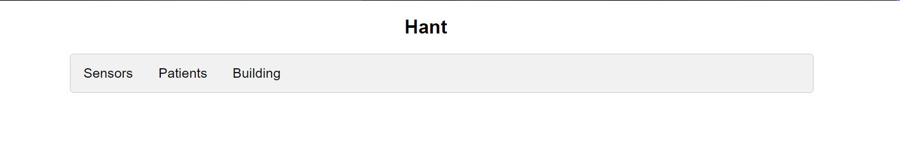First tab will open a list of all the sensors
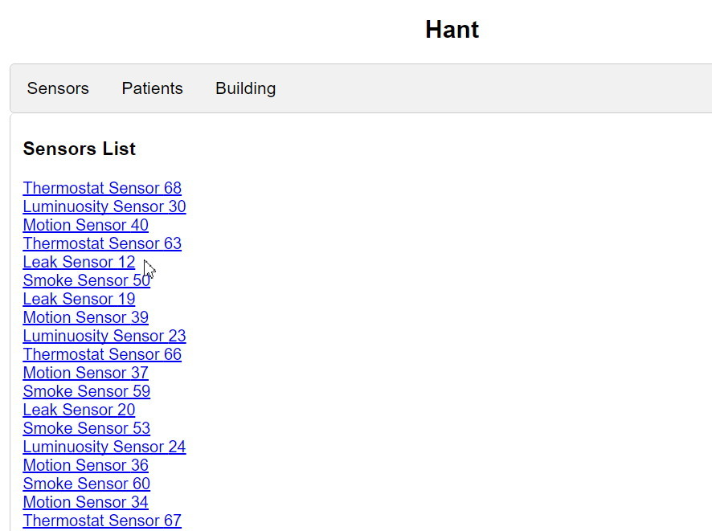If you click on one of them you will be redirected at a description page of that sensor
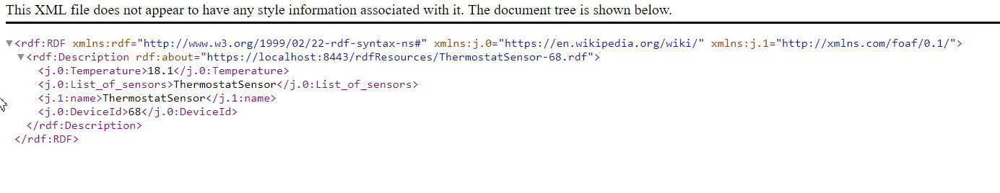Next Tab is Patients. When you click here a list of patient will become available
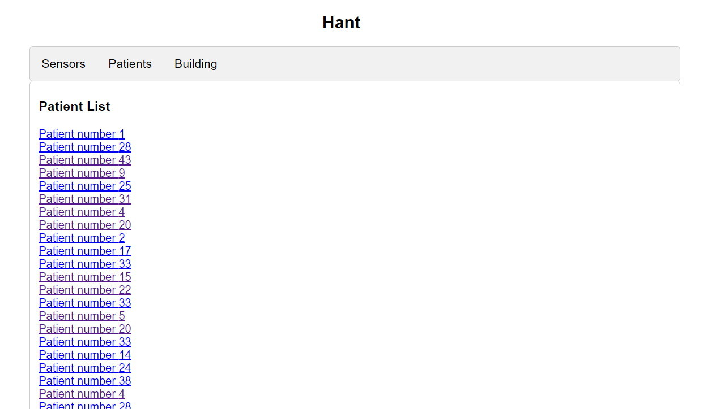As we seen at sensors if we click on one element of the list, we will be redirected to a description page
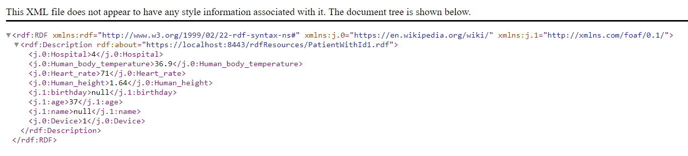next and last tab is building. If we click here a representation of the building plan will be provided
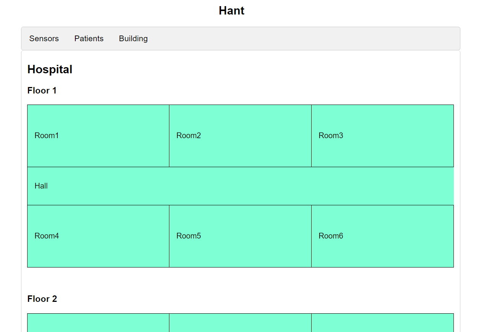If we click on the title of the page, we will witch rooms are in danger
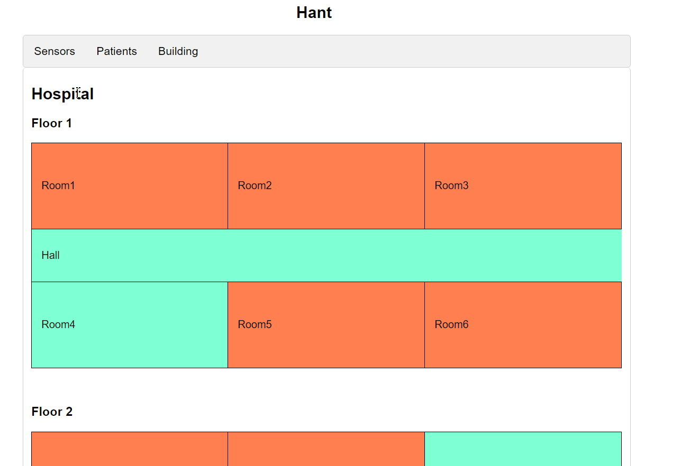Also if we click one one of this room, we will receive a list of those sensors witch created the alarm
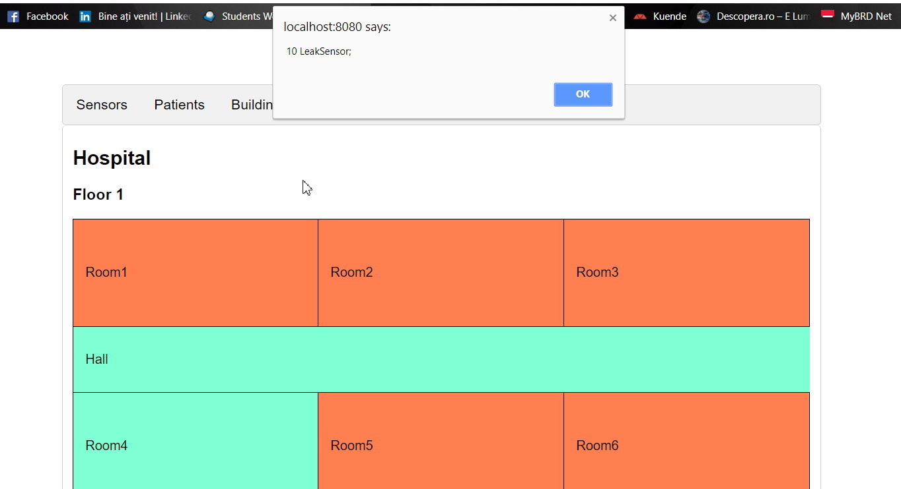The last thing that should be notice, is the restore button from the bottom. This button will dismiss the alarm until next click on title.
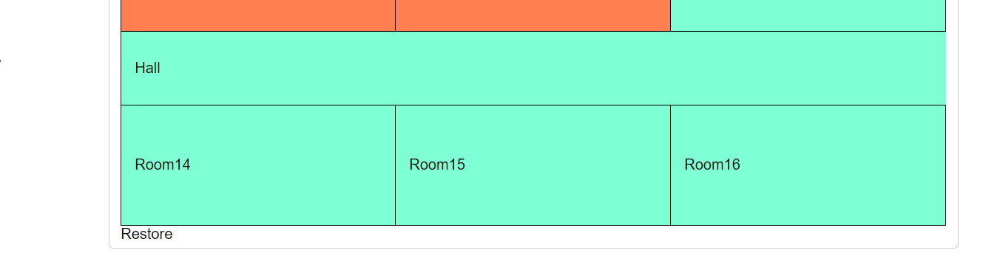